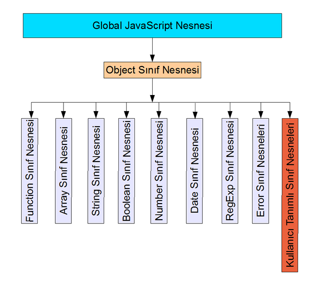

JavaScript Temelleri
Bölüm 2
Temel Bilgiler
2.2 - JavaScript Programlama Dili Veri Tipleri
Bölüm 2 Sayfa 2
Veri tiplerinin anlamı veri kümeleridir. ECMA-262 spesifikasyonu JavaScript'te 9 veri tipi bulunduğunu, bunların sadece 6 tanesinin kullanıcıya açık olduğunu, 3 tanesinin yorumlayıcı tarafından, ara hesaplar için kullanılacağını belirtmektedir. Bu durumda, ECMA-262 spesifikasyonunda, kullanıcıya açık altı tane veri tipi tanımlanmaktadır. Bunlar,
veri tipleridir.
Bunlardan ilk ikisi, trivial veri türleri olan undefined ve null veri türleridir. Bunlar sadece undefined ve null değerlerini içerirler. Sonra gelen üçlü, boolean , number, string tipleri, ilkel değerler (primitive values) olarak adlandırılan mantıksal, sayısal ve sözel veri tiplerinin değerleridir. Sonuncu veri tipi olan olan object veri tipi, ilkel bir değer olmayan ve ilkel değerler ile nesne değerleri alabilen değer özellikleri ile bu özellik değerlerini kullanarak sonuç üreten fonksiyonları (metot) içeren veri kapsülleri olarak tanımlanan nesne veri tipidir. JavaScript programlama dili de tamamen hiyerarşik olarak nesne yapısında tasarlanmış olduğundan, nesne veri yapısı Javascript programlama dilinde kolaylıkla uygulanabilir. Bu veri tiplerine ek olarak, JavaScript yorumlayıcıları değerlerine fonksiyon atanmış olan değişkenlerin veri tipi olarak function veri tipini de belirtirler. Tüm bu veri tipleri aşağıda tanıtılmıştır .
2.2.1 - Undefined Veri Tipi
Undefined Veri tipinde sadece undefined değeri bulunmaktadır. Bu değer literal (bir değişkene atanabilecek değer) olarak da kullanılabilir. undefined Değeri, kesinlikle tanımlanmamış bir değer değildir. Tam aksine JavaScript yorumlayıcısı bu değeri bildiği bir değer olarak kabul eder ve program çalışmasını durdurmaz.
Uygulamalarımızın oluşturulması için, gereken bilgileri henüz incelememiş durumdayız. Şimdilik, uygulamalarımızı yazabilmek için, Merhaba Dünya örneğinde kullandığımız yöntemi kullanmaya devam edeğiz. Bilgilerimiz ilerledikçe, uygulamalarımızın yazılımlarında da, gelişmiş yöntemleri kullanabileceğiz. Bu konuda, bir uygulamanın, JavaScript kodları aşağıda görülmektedir.
/* <![CDATA[ */ /* Bu Program bdelib-style.js Kitaplık Programını Kullanmaktadır */ function sonuç() { var s = undefined; bilgiYaz(s, 'b2.2.1-uyg-1-sonuç'); } sayfaYüklendiktenSonraÇalıştır(sonuç); /* ]]> */
Sonuç :
Yukarıdaki uygulama, hata mesajı ile durdurulmaksızın çalışmaktadır. Çünkü, JavaScript yorumlayıcısı çağrılan değişken değerini, undefined tipinde olan tek değer olan undefined değeri olarak algılamıştır.
Yukarıdaki uygulama sıra dışı ve trivial bir uygulamadır. Bir kullanıcının bir değişkene, undefined değerini ataması için bir neden bulunmamaktadır. JavaScript yorumlayıcısı, bazı durumlarda, bazı değişkenlere kendiliğinden undefined değeri vermektedir. Örnek olarak, dizilerin tanımlanmış , fakat birbrlerini takip etmeyen sıra numaralı elemanlarının arasında kalan tanımlanmamış elemanlarına, JavaScript yorumlayıcısı undefined değerini atamaktadır. Bunun dışında, program sonuçlarında undefined değerlerine rastlanılmaz.
2.2.2 - Null Veri Tipi
Null Veri tipinde sadece null değeri bulunmaktadır. Bu değer literal olarak da kullanılabilir. null Değeri, tanımlanmış fakat değer atanmamış değişkenlerin tanımlanmasında bir tür yer tutucu işlevini yapacak şekilde kullanılır. Bu konuda bir uygulamanın, JavaScript kodları aşağıda görülmektedir.
/* <![CDATA[ */ /* Bu Program bdelib-style.js Kitaplık Programını Kullanmaktadır */ function sonuç() { var s = null; bilgiYaz(s, 'b2.2.2-uyg-1-sonuç'); } sayfaYüklendiktenSonraÇalıştır(sonuç); /* ]]> */
Sonuç :
Yukarıdaki uygulama nın kodlarında olduğu gibi, değişkenlere ilk değer olarak null değeri verilerek tanıtma, Javascript programlama dilinde çok yaygın olarak kullanılır.
Özel null veri tipinin tek değeri olan null değeri, tip kontrolü yapılmayan karşılaştırma işlemlerinde, undefined değerine eşit gibi sonuç verebilir. Bu yanılsama, JavaScript kodları aşağıda görülen bir uygulamada gözlenmektedir.
/* <![CDATA[ */ /* Bu Program bdelib.js Kitaplık Programını Kullanmaktadır */ function sonuç() { var s = null; bilgiYaz(s == undefined, 'b2.2.2-uyg-2-sonuç'); } sayfaYüklendiktenSonraÇalıştır(sonuç); /* ]]> */
Sonuç :
Bu yanılsama, tip kontrolu yapılan, JavaScript kodları aşağıda görülmekte olan bir uygulamada ortadan kalkar. Bu nedenle, Javascript programlama dilinde, tip kontrolü yapılan karşılaştırmalar, tip kontrolü yapılmayanlara kıyasla çok daha güvenlidirler.
/* <![CDATA[ */ /* Bu Program bdelib.js Kitaplık Programını Kullanmaktadır */ function sonuç() { var s = null; bilgiYaz(s === undefined, 'b2.2.2-uyg-3-sonuç'); } sayfaYüklendiktenSonraÇalıştır(sonuç); /* ]]> */
Sonuç :
2.2.3 - Boolean (Mantıksal) Veri Tipi
Mantıksal değerler, hem literal olarak verilebilir hem de program akışı içinde, karşılaştırma sonuçları ile ortaya çıkarlar. Mantıksal değerlerin en önemli kullanım alanları program akış kontrolünün transferidir. Yani programda işlemlerin çalıştırılma sıraları, mantıksal değerlerin doğrulaması ile değiştirilebilir ve bu da program yapımına büyük esneklik sağlar. Mantıksal değerlerin sadece açık/kapalı, bayrak inik/ bayrak kalkık, 0/1, evet/hayır olarak kabul edilebilecek ikili değerler alabilmeleri, bunların bir değişkene atanarak bu değişkenin mantıksal değerinin, program içinde olayların gerçekleşmesi ile değer değiştirmesi, bir tren yolunda işaret bayrağının ekspresi bir raydan diğerine yönlendirmesi gibi, programı da bir daldan diğerine geçirmesi (program dallanması) sağlanabilir. Bu tür uygulamalar ileride karşılaştırmalar konusunda görülecektir.
Mantıksal değerlerde true 1, false 0 anlamına gelir ve yorumlayıcı da bu şekilde değerlendirir. Yine de, uygulamada bu değerleri salt true/false mantıksal değerler şeklinde düşünerek, 0 ve 1 olarak değil, true/false olarak kontrol ettirmek daha uygun olacaktır.
JavaScript kodları aşağıda görülmekte olan bir uygulamada, bir değişkene mantıksal bir değer atanmasını ve atanmış olan bu mantıksal değişkenin, 0 değeri ile değer olarak karşılaştırılmasını göstermektedir.
/* <![CDATA[ */ /* Bu Program bdelib.js Kitaplık Programını Kullanmaktadır */ function sonuç() { var s = false; bilgiYaz(s == 0, 'b2.2.3-uyg-1-sonuç'); } sayfaYüklendiktenSonraÇalıştır(sonuç); /* ]]> */
Sonuç :
Bu uygulama sonunda, karşılaştırmanın doğrulanması, mantıksal false değişkeninin, değer olarak sayısal 0 değeri ile eşit olmasındadır. Fakat, JavaScript kodları aşağıda görülen uygulamada olduğu gibi, mantıksal false değeri ile, 0 sayısal değeri, hem değer hem de tip kontrolü yapan === işlemcisi ile karşılaştırılırsa, sonuç doğrulanmayacaktır. Çünkü her iki işlenenin değerleri eşit olmasına karşın, veri tipleri farklıdır.
/* <![CDATA[ */ /* Bu Program bdelib.js Kitaplık Programını Kullanmaktadır */ function sonuç() { var s = false; bilgiYaz(s === 0, 'b2.2.3-uyg-2-sonuç'); } sayfaYüklendiktenSonraÇalıştır(sonuç); /* ]]> */
Sonuç :
Mantıksal büyüklükler bir programlama dilinde, en önemli programlama araçlarından biridir bu yüzden, mantıksal değerlerin kullanımı çok iyi özümsenmelidir.
2.2.4 - Number (Sayısal) Veri Tipi
Sayısal veri tipi, Literal olarak kullanılabilien, ontabanlı (desimal) kayan noktalı 64 bit İEEE 754 sayıları, ve literal olarak kullanılamayan ve sadece programların çalışması sonunda oluşabilen,
NaN (Not a Number), pozitif sıfır, negatif sıfır, pozitif sonsuz, negatif sonsuz değerlerini içerir.
On tabanlı (desimal) veya hex tamsayı değerleri, genel sayısal tipte değerler olarak kabul edilirler. Yani özel bir tamsayı (ınteger) tip yoktur.
NaN Değeri literal olarak kullanılamaz sadece karakter dizgisi bir veri ile matematik işlem yapılmak istenmesi gibi durumlarda, JavaScript yorumlayıcısı tarafından yanıt olarak oluşturulur.
pozitif ve negatif sonsuz Değerleri literal olarak kullanılamaz sadece yorumlayıcının hesap yapabileceği sınırlar dışına çıkıldığı durumlarda sonuç olarak oluşturulur.
JavaScript sayısal değerleri, IEEE 754 de standardı tanımlarına uygun, çift duyarlıklı 64 bit sayısal değerlerdir. Bu özellikler en yüksek sayısal standardı karşılamaktadır.
ECMA-262 standardı, Javascript sayılarının
18437736874454810627 (264-253+3) değer alabildiğini, bunlardan yarısının pozitif, yarısının negatif olduğunu, standarttan farklı olarak 253+2 tane NaN( Not a Number) değerinin biribirinden farklı değil, sadece bir tek NaN değeri olarak kabul edildiğini belirtmektedir. Bu tanım, ortalama bir kullanıcının her türlü beklentisini karşılayacak düzeydedir ve günümüzde masa üstü bilgisayarlarda işlenebilecek en yüksek duyarlıkta verilerdir. Bu açıdan bir sorun yoktur.
Bir başka değerlendirmede, Microsoft JavaScript uygulaması olan Jscript'in (ECMA-262 destekli),
±5x10-324 ile ±1.7976931348623157x10 308 arası sayıları çalıştırabildiği belirtilmektdir. Her iki ifade de biribiri ile eşdeğer olmakla birlikte, sonuncusu daha açık ve anlaşılabilir bir tanımdır. Unutulmaması gerekir ki, programcıların gereksinmeleri birbirinden çok farklıdır ve bilimsel uygulamalarda bazen çok yüksek duyarlıklara gereksinme duyulmaktadır. Her durumda elde olan olanak bu sınırlar içindedir ve JavaScript hatta genel programlama dillerinin tümünde, işlenecek verilerin bu sınırlar içinde olması gerekmektedir.
Bir ön deneme olarak 10308 ve 10309 sayılarının JavaScript yorumlayıcısındaki sonuçlarının incelenmesi için mathrange.htm adlı program çalıştırılmış ve aşağıda görülen sonuçlar alınmıştır:
(Math.pow(10,308)-Math.pow(10,307)) = 9e+307 (Math.pow(10,309)-Math.pow(10,308)) = Infinity
Elde edilen sonuç çok anlamlıdır ve yukarıdaki tanımları doğrulamaktadır. Görüldüğü gibi sayısal değerler 10308 büyüklüğünde ve altında oldukça tüm sayısal ifadelerde değerlendirilebilmektedir (değeri hesaplanabilmektedir).
Yukarıdaki bilgilere göre,
d=1.6e-6; k=8.9E4; x=5; g=2.3E302 geçerli ifadelerdir.
L=10E310; Atanması sonucunda L değişkenine +∞ (artı sonsuz) değeri atanmış olacaktır.
JavaScript, tamsayı ve ondalıklı sayı (kayan noktalı sayı) farkı gözetmez. Tamsayılar da, içsel hesaplarda, kayan noktalı sayı olarak işlem görürler. JavaScript,
-2x1031 ile 2x1031-1 (dahil) arası tam sayılarla hesap yapabilir. Fakat, kayan noktalı verileri, tamsayı tipine çeviren bir hazır fonksiyon yoktur. Çünkü tamsayı tipi tanımlı değildir. Bununla beraber, kayan noktalı verileri, tamsayı olarak görüntüleme olanağı sağlayan, veri.toFixed(0) veya parseInt(veri) öntanımlı metotlardan yararlanılabilir.
Tamsayı literaller, pozitif veya negatif sayılar ve sıfır olabilir. Örnek,
16 -88 0
Tamsayı hex literaller de
0xff (sıfırxFF) veya aynı değere sahip 0xFF şeklinde yazılır. Bu değer 255 on tabanlı değerin karşılığıdır.
Oktal tamsayı değerleri 0636 gibi yazılır. Oktal sayılar tüm belge çözümleyicilerde desteklenmediğinden, kullanılmadan önce desteğinin denenmesi uygun olacaktır.
Javascript programlama dilinde sayıların kullanımını açıklayan bir uygulamanın, JavaScript kodları aşağıda görülmektedir. Bu uygulamanın kodları değiştirilerek, her türlü aritmetik işlem gerçekleştirilebilir.
/* <![CDATA[ */ /* Bu Program bdelib-style.js Kitaplık Programını Kullanmaktadır */ function sonuç() { var s = null; s = 12.5*3; bilgiYaz(s, 'b2.2.4-uyg-1-sonuç'); } sayfaYüklendiktenSonraÇalıştır(sonuç); /* ]]> */
Sonuç :
Javascript programlama dilinde, Number öntanımlı nesnesinin sağladığı, özgürce kullanılabilecek , Number.MAX_VALUE (Javascript programlama dilinde kullanılabilecek en büyük sayı), Number.MIN_VALUE (Javascript programlama dilinde kullanılabilecek en küçük sayı), Number.NaN (sayı değil), Number.POSITIVE_INFINITY (Artı Sonsuz), Number.NEGATIVE_INFINITY (Eksi Sonsuz), değerleri aslında çok yararlı değillerdir. Bunlar öntanımlı sayı nesnesi incelenirken görülebileceklerdir.
Sayıların argüman olark kullanıldıkları öntanımlı Math nesnesinin metotları, Javascript programlama dilinin kullanımı ile en gelişkin matematiksel işlemlerin yapılmasına olanak sağlarlar. Bu son derece yararlı metotlar Math nesnesi incelenirken görülebileceklerdir.
2.2.5 - String (Karakter Dizgisi) (Sözel) Veri Tipi
Karakter dizgisi, işaretsiz 16 bit tamsayıların sonlu sıralanmış topluluğudur. Bu topluluğu oluşturan sayılara bu topluluğun elemanları adı verilir. Karakter dizgileri metin verilerinin işlenmesi için kullanılır. Bu topluluğun elemanlarını oluşturan işaretsiz 16 bit tamsayılar, Unicode karakterleri kod noktalarını belirtir.
Topluluğun elemanları, birer UTF-16 birimi olarak kabul edilirler ve bulundukları sıraya göre bir indis değeri ile tanımlanırlar. Eğer varsa birinci elemanın indis değeri 0, bir sonrakinin 1 şeklindedir ve bu indisler bir artarak topluluk sonundaki eleman dahil oluşturulur. Bir karakter dizgisinin uzunluğu içinde bulunan eleman sayısına eşittir.
Bir dış kaynaktan alınan karakter dizgisi literali, JavaScript yorumlayıcısına verilmeden önce, yazılmış olduğu karakter kodlamasından Unicode Normalize Formu C kodlamasına dönüştürülür. JavaScript program kodlarının da aynı kodlama ile kodlanması sağlık verildiğinden karakter dizgisi literallerinin program kaynak kodu ile integrasyonu sırasında zaman kaybı önlenmiş olur.
Yukarıdaki bilgilerden, metin olarak görüntülenen verilerin aslında Unicode karakter kod noktalarının değerinde sayısal veriler olarak işlem gördüğünü belirtmektedir. Görüntülenen metinler, Unicode karakterlerinin kılıf (glyph) değerlerinin görüntüleridir. Karakter verilerinin temelde sayı niteliğinde olmaları, karakter dizgisi (String) verilerinin sayısal değerlere kolaylıkla çevrilebilmesini açıklamaktadır.
Javascript programlama dilinde, karakter dizgileri (string veri tipi) 'Atatürk' gibi tek tırnak arasında veya "Atatürk" gibi çift tırnak arasında yazılırlar. JavaScript yorumlayıcısı açısından her iki yazılım da aynı şekilde değerlendirilir. Buna rağmen, her nekadar uygun görülmese de, JavaScript kodları, bazı özensiz programcılar tarafından bazen (X)HTML sayfa kodları içine yuvalanmış olarak uygulanabilmektedir. Bu durumda, aşağıdaki örnekte olduğu gibi,
... <input type"button" id = "hesapla" onClick = 'a = "Antalya"; açıkla(a);' /> ...
şeklinde bir yazılım, (X)HTML nitelik değerleri "" ile yazılırken onClick niteiğinin, içeriği olan JavaScript kodlarında "" olduğu için, '' şeklinde tek tırnak içine alınmasını gerektirmiştir. Bu da bütünlüğü bozucu ve hataya neden olabilecek potansiyel bir kaynak olduğundan, günümüzde bir önlem olarak, tüm JavaScript sözel değerlerinin, '' şeklinde tek tırnak içine alınarak yazılmaları sağlık verilmektedir. Bu şekilde, yukarıdaki kodlama,
... <input type"button" id = "hesapla" onClick = "a = 'Antalya'; açıkla(a);" /> ...
şeklinde daha tutarlı olarak yazılabilir. Aslında, bu gibi nedenlerden dolayı, engellemeyen JavaScript prensibi oluşturulmuş ve JavaScript kodlarının ayrı bir sayfada tutulması ve (X)HTML kodları ile karıştırılmaması sağlık verilmiştir. Bilinçli ve yerinde uyarlara uyan bir programcı, bu çalışmada olduğu gibi, JavaScript kodlarını daima ayrı bir sayfada tutmaya özen göstereceğinden, JavaScript kodlarında sözel değerlerin alışılmış olduğu gibi "" içinde belirtilmesinin hiçbir sakıncası yoktur.
Karakter dizgisi tipinde veriler, bilgisayar programlasının en fazla hizmet verdiği veriler arasındadır. Bunun sonucu olarak tüm programlama dilleri bigi, Javascript programlama dili de, karakter dizigisi tipinde verilerin daha iyi işlenebilmeleri için, çok sayıda hazır fonksiyon (öntanımlı metot) ve öntanımlı özellikler sağlar. Bu olanaklar, ileride detaylı olarak incelenecektir.
JavaScript sözel nesnelerinin içerebileceği özel kaçış (escape) kodları, kaçış süreci, (escape sequence) oluşturur. Bir kaşış süreci, sözel değerin satır başına atlatılması , ' gibi özel karakterlerin JavaScript yorumlayıcısından gizlenmesi gibi görevleri üstlenir.
Javascript programlama dili, üç tür kaçış karakterlerini destekler. Bunlar, klasik, hex ve unicode kaçış karakterleridir. Bu karakterlerin birbirine eşdeğerleri aynı etkiyi yapar.
Kaçış süreci \ karakteri ile başlar ve \b gibi bir klasik kaçış karakteri, veya \xXX şeklinde bir XX hex kaçış karakteri, veya \uXXXX şeklinde bir Unicode kaçış karakteri ile tanımlanır.
| Kaçış Süreci | Kod Noktası Değeri | İsim | Sembol |
|---|---|---|---|
| \b | \u0008 | backspace | <BS> |
| \t | \u0009 | horizontal tab | <HT> |
| \n | \u000A | line feed (new line) | <LF> |
| \v | \u000B | vertical tab | <VT> |
| \f | \u000C | form feed | <FF> |
| \r | \u000D | carriage return | <CR> |
| \" | \u0022 | double quote | " |
| \' | \u0027 | single quote | ' |
| \\ | \u005C | backslash | \ |
| Kod Noktası Değeri | İsim | Formal İsmi |
| \u000A | Satır Başı (Line Feed) | <LF> |
| \u000D | Şarjo Başı (Carriage Return) | <CR> |
| \u2028 | Satır Ayırıcısı (Line separator) | <LS> |
| \u2029 | Paragraf Ayırıcısı (Paragraph separator) | <PS> |
Kaçış süreçlerinin iki işlevi vardır. Bunlardan ilki, JavaScript yorumlayıcısının program kodu olarak değerlendirebileceği karakterleri, yorumlayıcıdan gizlemek ve bu kodları sadece bir karakter dizgisi karakteri olarak değerlendirmesini sağlamaktır. Bu işlev çok önemlidir ve tüm belge çözümleyiciler tarafından sorunsuz desteklenmektedir. Bu konudaki bir uygulamanın, JavaScript kodları aşağıda görülmektedir.
/* <![CDATA[ */ /* Bu Program bdelib.js Kitaplık Programını Kullanmaktadır */ function sonuç() { var s ='Düz metin satırları, ingilizce \"text\" olarak nitelendirilmektedir.'; bilgiYaz(s, 'b2.2.5-uyg-1-sonuç'); } sayfaYüklendiktenSonraÇalıştır(sonuç); /* ]]> */
Sonuç :
Kaçış süreçlerinin ikinci işlevleri program dillerinin çıktılarının metin niteliğinde olduğu ve çıktıların elektrikli şaryolu daktilo benzeri satır yazıcıları (line printers) lerden alındığı günlerden kalmadır. Bu kaçış süreçleri, sadece metin tabanlı çıktılar için anlamlıdır JavaScript programlama dilinde ileride inceleyeceğimiz alert metin kutusu gibi metin kutularının içeriği metin tabanlıdır ve biçimlendirme amaçlı kaçış karakterlerini destekler. Aslında metin kutuları gibi mesaj kutularının içeriklerinin biçimlendirilebilmesi için tek olanak kaçış karakterlerlerinin uygulanmasıdır. JavaScript kodları aşağıda görülmekte olan uygulamada, içeriği kaçış karakterleri ile biçimlendirilmiş bir metin kutusu mesajı görüntülenmektedir.
/* <![CDATA[ */ /* Bu Program bdelib-style.js Kitaplık Programını Kullanmaktadır */ function mesajGöster() { alert('Merhaba \n Dünya !'); return false; } function mesaj(a) { var f = document.getElementById(a); f.onclick = mesajGöster; } function başlat() { var s ='Düz metin satırları, ingilizce \"text\" olarak nitelendirilmektedir.'; mesaj('hesapla'); } sayfaYüklendiktenSonraÇalıştır(başlat); /* ]]> */
Diğer taraftan, Javascript programlama dili gibi script dilleri, çıktılarını normalde (X)HTML elementlerinin içeriği olarak verirler. Bu tip çıktılar da, metin tabanlı olmalarına karşın yoğun bir şekilde biçimlendirilmişlerdir (formatlanmıştır) ve belge çözümleyicisinin (X)HTML elementlerini çözümlemesine göre görüntülenirler. Bu içeriğin, kaçış süreçleri ile biçimlendirilmeye çalıışılması, (X)HTML çözümü görüntüyü bozacağından anlamsız olacaktır. Bu nedenle, günümüze kadar, belge çözümleyiciler bu içeriğe uygulanmak istenen biçimlendirme amaçlı kaçış işaretlerini gözardı etmekteydiler. Günümüzde de bu aynı şekilde devam etmekte iken yeni çıkan Internet Explorer 8'in beta sürümü, sürpriz bir şekilde biçimlendirme amaçlı kaçış süreçlerini desteklemeye başlamıştır. Bu destek henüz yetersiz bir düzeydedir. Sonuç, doğal olarak kötü bir görüntüye neden olduğundan, destek tutarsız olduğundan ve henüz başka hiçbir belge çözümleyici, (X)HTML içeriğinde biçimlendirme amaçlı kaçış süreçlerini desteklemediğinden, şimdilik bu kaçış süreçlerinin kullanılmasından kaçınılması daha doğru olacaktır.
Aşagıda, JavaScript kodları verilen uygulama, daha önce görmüş olduğumuz 'Merhaba Dünya !' mesajını, CSS ile biçimlendirilmiş bir (X)HTML paragrafının içeriği olarak yazdıran programı ile aynıdır. sadece bu programda, 'Merhaba \n Dünya !' mesajı görüntülenmek istenmektedir. Bu uygulama, Internet Explorer 8 beta dışında her belge çözümleyici tarafından aynı eski programı gibi görüntülenecek, sadece Internet Explorer 8 beta ile görüntülendiğinde, kaçış karakterinin öngördüğü biçimlendirme uygulanabilecektir
/* <![CDATA[ */ /* Bu Program bdelib.js Kitaplık Programını Kullanmaktadır */ function sonuç() { var s ='Merhaba \n Dünya'; bilgiYaz(s, 'b2.2.5-uyg-3-sonuç'); } sayfaYüklendiktenSonraÇalıştır(sonuç); /* ]]> */
Sonuç :
Kaçış karakterlerinin, yukarıdaki tabloda görülebilen Unicode karşılıkları, ASCII karşılıklarına eşdeğer bir şekilde, sorunsuz olarak çalışır. Buna rağmen Türkiye gibi, Latin-5 karakter kodlaması alanı içinde olan ülkeler için, aynı işi daha fazla karakter kullanarak yaptırmak gereksiz sayılabilir.
2.2.6 - Object (Nesne) Tipi
Nesne tipi, ilkel değer olmayan verilerin tipidir. Nesne tipi veriler, millenium sonrasında patlama yapan OOP (Object Oriented Programming) (Nesneye Yönelik Programlama) yöntemlerinin yapıtaşlarıdır.
Bir nesne, dışa karşı kapalı, belirli bir düzene bağlı olmadan biraraya toplanmış, veri topluluğudur. Verilerin bir nesne yapısında toplanmasına kapsülleme (encapsulation) adı verilir.
Nesneler bileşik verilerdir ve ilkel veri tiplerinin ve fonksiyonların biraraya gelmesinden oluşurlar. Her nesnenin bir yapısı vardır. Bu yapıda, nesnenein hangi ilkel değerler ve fonksiyonlardan oluşacağı belirlenir. Nesnelerin yapılandırılması istendiği gibi yapılabilir. Bir nesnenin yapılandırılması için uyulması gereken hiçbir kural yoktur. İstendiği kadar değer ve fonksiyon kullanılarak bir nesnenin yapısı belirlenir. Bir nesnenin yapısı belirlenince, bu yapıya uygun, sonsuz sayıda örnek oluşturulabilir.
ECMA-262 spesifikasyonu, nesnelerin özelliklerden oluştuklarını, her özelliğin, ilkel bir tip veya bir nesne veya bir fonksiyon olabileceğini belirtir. Nesne özelliği olarak kapsüllenmiş fonksiyon, metot olarak adlandırılır. Nesneler, nesne özelliği olarak tanımlanarak istendiği kadar derinlikte oluşturulabilir. Fakat abartılı derinlikte nesnelerin kullanımları da güçleşir.
Javascript programlama dili, iki tür nesneyi içerir. Bunlar,
olarak belirlenir. Öntanımlı nesnelerin yapılandırıcı fonksiyonları kullanıcıya açık değildir. Bu yapılandırmayı, spesifikasyou yapan kuruluş düzenler. Kullanıcı tanımlı nesnelerde ise, kullanıcılar, istedikleri gibi yapılandırdıkları nesnelerden istedikler kadar örnek yaratabilirler.
JavaScript programlama dili, üç kaynaktan gelen öntanımlı nesneyi nesneleri destekler. Bu nesneler,
olarak sınıflandırılır.
JavaScript çekirdek nesneleri, ECMA-262 spesifikasyonu ile tanımlanmıştır. Bu spesifikasyon, Tüm çekirdek nesnelerinin özellik ve metotlarını belirtmektedir.
Belge çözümleyici ortama ait nesneler (BOM) hiçbir ortak spesifikasyona bağlı olmayan nesne tipleridir. BOM kapsamındaki nesnelerin spesifikasyonları, herhangibir ortak spesifikasyona bağlı olmaksızın, doğrudan belge çözümleyiciyi yapanlar tarafından kararlaştılır ve yayınlanır. Bu nedenle, özellikle BOM nesneleri yüzünden, belgelerin bir belge çözümleyicide desteklenip diğerinde desteklenmemesi sorunları ortaya çıkabilir. Konu ticari olduğundan ortak bir uzlaşma çerçevesinde çözümlenmesi çok güç olmaktadır.
Belge yapılandırılmasına ait nesneler, W3C tarafından yayınlanan spesifikasyon olan, W3C-DOM spesifikasonu ile düzenlenmiştir. Bu spesifikasyonu destekleyen tüm belge çözümleyiciler bu nesneleri desteklerler. Bunun yanında, her JavaScript yorumlayıcısı, kendine özel özellik ve metotları da destekleyebilir.
JavaScript doğal nesnelerine (native objects), çekirdek nesneleri (core objects) adı da verilir. Çekirdek nesneleri, büyük harfle başlarlar ve JavaScript programının konuk edildiği belge çözümleyicisi ortamından bağımsızdırlar. JavaScript programlama dilinde onyedi tane kullanıcı tarafından serbestçe çağrılabilecek öntanımlı çekirdek nesne tipi bulunmaktadır. Bunlar, Boolean, Number, String, Function, Array, Object, Math, Date, Global, RegExp ve hata nesneleri olan Error, EvalError, RangeError, ReferenceError, TypeError, URIError, SyntaxError, öntanımlı nesneleridir.
Boolean, Number, String nesne tipleri, kendilerine karşılık gelen ilkel veri tipinde eşlenikleri için bir nesne paketleyicisi (wrapper object) niteliğindedirler. JavaScript programlama dilinde mantıksal, sayısal ve karakter dizigisi veriler hemen hemen daima ilkel veri tipinde kullanılırlar. Bu nedenle, JavaScript çekirdek nesnelerinden ilkel veri paketleyici türler, çok seyrek rastlanılan özel durumlar dışında hiç kullanılmazlar.
Öntanımlı Global nesnesi bir veri tipi değildir. Bu nesne, JavaScript yorumlayıcısını konuk eden ortamın belirtildiği nesnedir. Kullanıcıların bu nesneye Global () yapılandırıcı fonksiyonu olarak, erişimleri yoktur. Kullanıcılar, Global nesne sınıfı örnekleri yaratamazlar. Global nesne sınıfı, çalışan JavaScript ortamının tüm değişkenler ve metotlarını .özellik olarak içeren genel bir kapsam nesnesidir. JavaScript yorumlayıcısını konuk eden ortam, global kapsam nesnesi olarak kabul edilir. Belge çözümleyici ortamında, window nesnesi global nesne görevini yapar. Global JavaScript Nesnesi bölüm b3 de ayrınıtılı olarak incelenmiştir.
JavaScript çekirdek nesnelerinden, öntanımlı Math, nesnesi kullanıcıların örneklerini oluşturabileceği bir nesne sınıfı değildir. Math, nesnesinin sadece öntanımlı metotları kullanılabilir.
JavaScript çekirdek nesnelerinden Function nesne sınıfı, tüm fonksiyonların prototiplerini belirleyen nesne sınıfıdır. Tüm tanımlanan fonksiyonlar, bu sınıfın örnekleri olarak kabul edilirler. Bunun dışında, öntanımlı Function() yapılandırıcı fonksiyonu, sadece fonksiyon nesne sınıfı örnekleri olan fonksiyon nesnelerinin yapılandırılması için kullanılır.
JavaScript çekirdek nesnelerinden Object nesne tipi, Global JavaScript nesnesinin bir alt sınıfıdır. Bu nedenle, Global JavaScript nesnesinin tüm özellik ve metotlarını kalıtımla elde eder. Object nesne sınıfı, diğer nesne sınıfları için, bir üst sınıf niteliğindedir. Bu nedenle, tüm öntanımlı ve kullanıcı tanımlı nesne sınıfları, Object sınıfının özellik ve metotlarını kalıtımla elde ederler. Ayrıca, nesne literalleri Object nesne sınıfının örnekleri niteliğindedir. JavaScript nesne hiyerarşisi, aşağıda görülmektedir.

Şekil 2.2.6 -1 - JavaScript Nesne Hiyerarşisi
JavaScript çekirdek nesnelerinden öntanımlı Array Date, ve RegExp nesne türleri, kendilerine özel ve özgün veri türleri olarak düşünülebilirler. Bunlardan ilki, dizi veri tiplerini, ikincisi tarih veri tiplerini, üçüncüsü düzenli deyimler veri tiplerini organize ederler.
Hata veri tipleri olan Error nesneleri, başlıbaşına bir veri tipi değil, genel Error nesne veri tipinin özel sınıfları olarak düşünülebilirler.
JavaScript programlama dilinde, ilkel veri tipleri ve Object veri tipi yanında bir başka veri tipi de function veri tipidir. Bu veri tipi, JavaScript programlama dilinde, birinci sınıf nesneler olan ve değişkenlere atanabilen fonksiyonların atanmış oldukları değişkenlerin sıradışı veri tipidir. ECMA-262 spesifikasyonu bu veri tipini tanımlamamıştır. Bu veri tipi, JavaScript yorumlayıcılarına özgüdür ve değişkenlere atanmış fonksiyonların diğer nesne tiplerinden ayırt edilmeleri için çok yararlıdır.